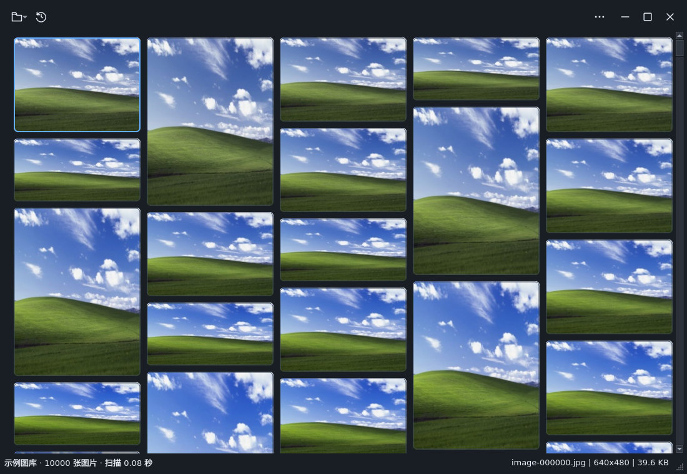

用户已选择极简图库。以下为实际 Qt 窗口截图，包含浅色、深色、预览、空目录及 640px 窄窗口。

截图加载失败，请检查 screens 目录是否与本页一同保存。
两处“更多”和预览左侧显示方式按钮均隐藏下拉三角，菜单仍可点击。20px 图标、主题颜色、悬停与焦点样式由共享标题栏统一；目录短名称复用原状态行。
卡片以中性色悬停、蓝色选中和内侧虚线焦点区分状态。未加入缩略图条、常驻动画、原图缓存或相邻图片预加载。
全部 GUI 检查在独立虚拟 X11 内完成，不占用用户鼠标。实体跨屏、动态硬件 DPI 和真实触控板手感仍未新增验证。
| 指标 | 实施前 | 正式 A |
|---|---|---|
| 30万张冷缓存峰值 RSS | 208.0 MiB | 208.1 MiB |
| UI 空闲单核 CPU 中位数 | 0.156% | 0.152% |
| 深色整窗绘制中位数 | 1.451 ms | 1.641 ms |
| 图库／预览 QWidget 子对象 | 26／33 | 26／33 |
没有显著资源改善的结论。深色强制整窗合成增加约 0.190ms；实测短段滚动未见明显 CPU 或 I/O 回归。整窗合成不等于实际滚动帧率。